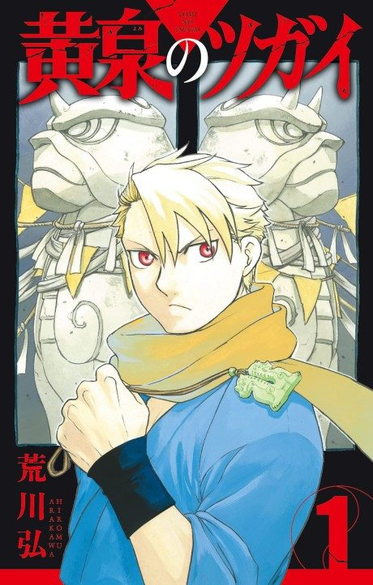

Daemons of the Shadow Realm
黄泉のツガイ
After the anime, read the manga from Chapter 34.
7.8AniList score
—Animeter, no votes yet
24episodes
Rate it or report where you stopped
Anime finished. Where does the manga pick up?
Start at Chapter34
The 24-episode first season ends at Chapters 32-33, in manga Volume 8. Start reading from Chapter 34.
133ongoing
Season 1Start reading here